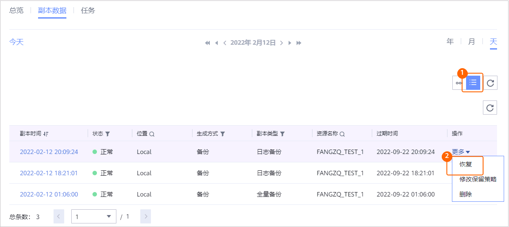
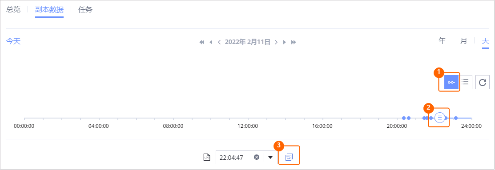

当需要对已备份的TiDB备份资源进行恢复时，可以参考本节恢复TiDB备份资源至原位置或新位置。
背景信息
支持使用备份副本、复制副本、导入的副本进行恢复。支持恢复至原位置（复制副本不支持恢复至原位置）或新位置。
前提条件
- 恢复前请确认恢复目标位置正确。
- 恢复前请确保恢复目标位置的数据目录剩余空间大于恢复副本缩减前大小
- 执行恢复任务前，请关闭TiDB日志备份开关。恢复任务完成后，重新打开该开关，开启和关闭的操作方法请参见在生产环境开启或关闭日志备份开关。
- 集群需保持同样的时钟源配置。
操作步骤
- 选择“数据利用 > 副本数据 > 数据库 > TiDB”。
- 您可以以TiDB备份资源维度或以副本维度查找副本，本节以资源维度为例进行说明。
在“资源”页签，根据备份资源名称查找到需要恢复的备份资源，并单击备份资源名称。
- 在“副本数据”页签，依次选择年、月、天找到副本。
当时间上显示
 ，即表示该月、该天存在副本。
，即表示该月、该天存在副本。 - 指定副本或时间点进行恢复。
您可以指定副本或指定时间点进行恢复。
- 指定副本或指定时间点进行恢复。
- 指定副本进行恢复

- 指定时间点进行恢复。

时间轴上蓝色覆盖区域均可进行时间点恢复，
 表示该时间点存在副本。没有进行日志备份的时间点无法进行时间点恢复。
表示该时间点存在副本。没有进行日志备份的时间点无法进行时间点恢复。
- 对于1.5.0版本，时间轴上最多仅展示100个副本，单击
 可以查看所有副本。
可以查看所有副本。 - 执行时间点恢复时，由于管理界面无法获取恢复时所使用的副本信息，因此，在恢复任务和相关的事件页面，用户无法看到该恢复任务的副本信息。
- 对于1.5.0版本，时间轴上最多仅展示100个副本，单击
- 指定副本进行恢复
- 恢复TiDB备份资源至原位置或新位置。
相关参数说明如表1。
- 单击“确定”。
- 指定副本或指定时间点进行恢复。